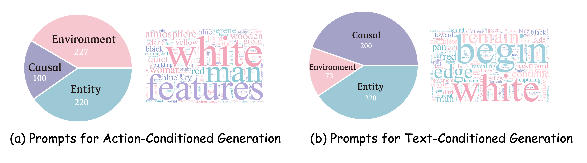

Entity Consistency
Tests whether individual objects and human subjects keep their persistent identity and attributes across long rollouts.
- Object geometry consistency
- Object texture consistency
- Human identity consistency
- Human appearance consistency
Project Page
1Tsinghua University 2WeChat Vision, Tencent Inc. 3Peking University
* Equal contribution. † Corresponding author.
Recent video-based world models can synthesize high-fidelity visual sequences, but a fundamental gap remains between visually plausible generation and the functional requirements of a world model. A reliable world model must maintain a stable and reasonable internal state across extended temporal horizons, camera motion, occlusion, and interaction.
MBench is a comprehensive benchmark for quantifying memory capability in video world models. It decomposes memory into three complementary dimensions: entity consistency, environment consistency, and causal consistency. These dimensions are further refined into twelve quantifiable sub-dimensions covering object geometry and texture, human identity and appearance, spatial and rendering stability, self-evolution, and text/action-conditioned interaction.
The benchmark is built from rigorously curated real-captured long videos and evaluated with a hybrid protocol that combines rule-based quantitative metrics with VLM question-answering. Extensive evaluation of recent video continuation models and action-conditioned world models reveals systematic limitations in long-term state retention, exposing memory as a central bottleneck for building persistent, controllable, and causally coherent video world models.
We evaluate eight text-conditioned continuation models and six action-conditioned world models. The table reports the memory sub-dimensions for which valid automatic measurements are available in the paper.
Dashes indicate metrics that are not evaluated for that model setting. Higher values indicate stronger memory capability under the corresponding sub-dimension.
MBench uses a hierarchical taxonomy that moves from persistent entities, to stable environments, to the causal rules that govern state evolution and interaction.
Tests whether individual objects and human subjects keep their persistent identity and attributes across long rollouts.
Measures whether the spatial stage and rendering properties of the world remain stable as viewpoints change.
Evaluates whether generated worlds follow established physical and semantic rules through hidden intervals.
Select a memory dimension and sub-dimension to inspect paired video comparisons with per-dimension scoring.
Object Consistency
Check whether the geometric structure of a target object is preserved after departure-return camera motion.
MBench uses Trigger-Conditioned Scoring to avoid rewarding models that preserve consistency only by avoiding the memory challenge. A generated video must first enter the intended state before post-event consistency is scored.
Collect real-captured long videos with occlusion, departure-return camera motion, human-object interaction, and physical state transitions.
Create multi-segment text continuations and exit-wait-reenter action sequences that explicitly require state retention.
Use VLM verification to confirm that the generated video actually executes the memory-triggering event.
Evaluate consistency only on valid samples, then aggregate the post-event consistency scores with the M-Score formulation.
MBench aggregates real-world long videos from DL3DV, Tanks and Temples, OpenHumanVID, SpatialVID, and Physics-aware-video. These sources cover indoor and outdoor environments, human-object interactions, dynamic camera motion, and physical state transitions, with video durations ranging from seconds to minutes.
A VLM is used to select clips that pose meaningful memory challenges for entity consistency, environment consistency, and causal consistency. For text-conditioned continuation, each video is converted into a structured scene description and split into five semantically coherent segments with camera-control instructions. For action-conditioned models, MBench adopts an exit-and-reenter paradigm: the camera leaves the target entity, waits while the target is invisible, and then follows the reverse trajectory back to the initial view.
The evaluation kit implements specialized metrics for the twelve sub-dimensions, including SAM 2 masks, DINOv2 features, ArcFace identity tracks, DA3 camera geometry, CIELAB lighting statistics, Gram matrix style distance, OpenCLIP text-video alignment, 6-DoF action alignment, and VLM-based causal scoring.

Quick Start
git clone https://github.com/study-overflow/MBench.git
cd MBench
pip install -r requirements.txt
python evaluate.py \
--pred_dir outputs/model_name \
--split benchmark \
--metrics allMany models produce visually plausible long videos but fail to maintain persistent world state after occlusion, camera departure, or long-horizon continuation.
Models can preserve local appearance while losing the underlying 3D layout, producing high visual coherence but weak epipolar and reprojection consistency.
Action-conditioned world models differ substantially in their ability to execute controlled motion, return to prior viewpoints, and preserve hidden state.
Out-of-view state evolution exposes whether a model truly simulates causal progress or simply resets to a plausible but unrelated later frame.
In the human alignment study, the current annotation set contains 4,459 records from 22 annotators, covering binary trigger judgments and pairwise memory-consistency comparisons across all 14 evaluated models and 12 dimensions. Entity metrics align strongly with human preferences on text-conditioned continuation, while spatial epipolar and reprojection metrics are especially predictive for action-conditioned rollouts.
If you find MBench useful for your research, please consider citing our paper.
@article{zhang2026mbench,
title = {MBench: A Comprehensive Benchmark on Memory Capability for Video World Models},
author = {Zhang, Shengjun and Zhang, Zhang and Huang, Simin and Tang, Zhenyu and Wang, Hanyang and Dai, Chensheng and Chen, Min and Li, Yifan and Li, Yuxin and Chen, Yingjie and Liu, Hao and Li, Chen and Duan, Yueqi},
journal = {arXiv preprint},
year = {2026}
}